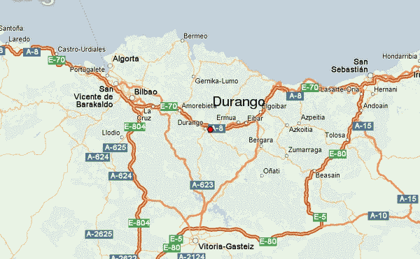
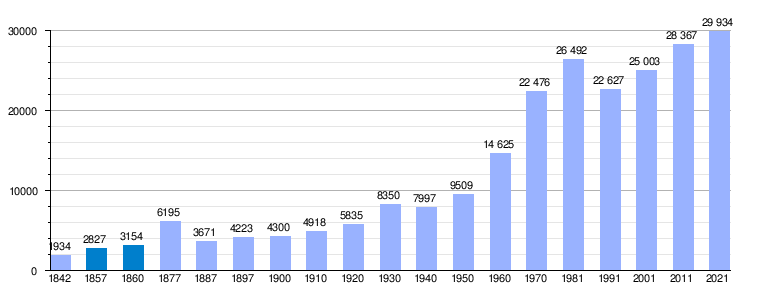
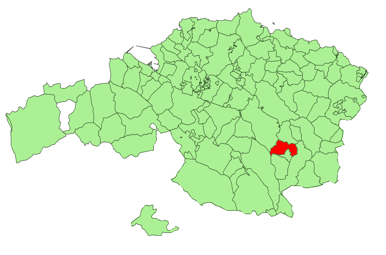

Ubicación

Durango pertenece a la provincia de Vizcaya en el País Vasco, está situada a 23Km de Bilbao en dirección al este.

Durango pertenece a la provincia de Vizcaya en el País Vasco, está situada a 23Km de Bilbao en dirección al este.

El municipio tiene actualmente 29.887 habitantes (INE 2024)

La superficie de Durango actualmente es de 10,79 km²